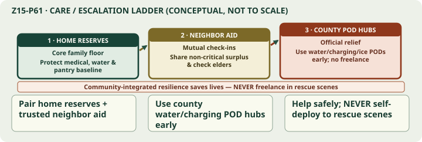

Z15-P61 · Disaster scenarios · New manuscript
Coordinate neighborhood mutual aid and county relief hubs responsibly
Multiply household safety and endurance by pairing private readiness with structured neighborhood sharing and official municipal relief.
When it applies · Multi-week storms, regional blackouts, floods, or community-wide recovery events.
Equipment · Neighborhood skill/contact roster, local 211/county emergency-management broadcasts, and clear safety boundaries.

Actions
- Recognize that true 30-day resilience is COMMUNITY-INTEGRATED, not hostile isolation: share non-critical surpluses (spare batteries, charging slots on a safe outdoor generator, shoveled sidewalks, shared hot water/meals, childcare swaps) cleanly with trusted neighbors while protecting core family medical/water floors.[D18, U14]
- Use official county, Red Cross, National Guard, and municipal distribution hubs (PODs — Points of Distribution for water, MREs/groceries, ice, tarps, charging, and medical triage) proactively as soon as opened rather than waiting until home supplies are completely empty.[D18, D14]
- Volunteer safely within your real physical limits and training—checking on elderly neighbors, clearing shared curb fire hydrants, and coordinating through established local faith/civic/emergency channels rather than freelancing into active rescue scenes.[D18, T01]
Failure recognition · Refusing community water/charging support out of pride while a household's medical batteries run dry, OR freelancing untrained into an active flood-rescue street.[D18, T01]
Verify · Confirm local 211/county POD announcements monitored, neighbor check-in roster active, and personal medical/water floors protected.[D18, U14]
Stop or change course · Never self-deploy into active fire, flood, downed-wire, or hazmat scenes—leave technical rescue strictly to trained emergency responders.[T01, D05]
Evidence and editorial notes
- D05 · FEMA / Ready.gov · Floods (current web edition)
- Section: Floods: During; Turn Around, Don’t Drown · Conditions: Flooded roads or trails, flood alert, or post-flood re-entry
Support: Move to safe higher ground when directed, never walk or drive into floodwater, and respect closures and re-entry restrictions.
Limitations: Depth examples are warning illustrations, never safe entry thresholds. Trapped or submerged vehicles require emergency help and scene-specific response. · Conflicting evidence: See A02 claim audit for boundaries.
Editorial note: Core flood evacuation, water-avoidance, and safe re-entry evidence. · Specialist reviewer: Emergency management and flood hydrology
Primary source · checked 2026-11-24 - D14 · FEMA / Ready.gov · Evacuation (current web edition)
- Section: Before, during and after evacuation · Conditions: Official evacuation or a preplanned, safely accessible departure
Support: Prepare a go-kit, routes, transport and a contact plan. Follow official routes and use the locally indicated registration or reunification channel.
Limitations: Shelter accessibility and animal accommodations require local and ADA guidance; no fixed national website is assumed. · Conflicting evidence: See A02 claim audit for boundaries.
Editorial note: Core evacuation execution and accountability evidence in Z15. · Specialist reviewer: Emergency management and transportation safety
Primary source · checked 2026-11-24 - D18 · FEMA / Ready.gov · Drought (current web edition)
- Section: Extended 30-Day Resilience, Supply Pacing, and Mutual Aid · Conditions: Multi-week regional disruption, supply-chain interruption, or prolonged utility recovery
Support: Manage 30-day household resilience through structured inventory tracking, conservative water/fuel/battery rationing, scheduled sanitation and hygiene routines, daily neighborhood wellness checks, and early transition to community distribution hubs before critical reserves run dry.
Limitations: Self-reliance plans must remain integrated with municipal/county relief and medical care—isolation without community check-ins increases mortality during prolonged disasters. · Conflicting evidence: None; frames 30-day scenarios realistically without doom-isolationism.
Editorial note: Anchors Z15 30-day operations, rationing logs, and community mutual-aid cards. · Specialist reviewer: Emergency management and community resilience
Primary source · checked 2026-11-24 - T01 · American Red Cross · First Aid Steps (current web edition)
- Section: First Aid Steps > Check the scene; check the person · Conditions: Lay responder in United States; assess safety before contact
Support: Check scene safety, responsiveness, breathing and immediately life-threatening conditions.
Limitations: Lay guidance does not replace advanced clinical or rescue protocols. · Conflicting evidence: None; universal first-response opening gate.
Editorial note: Anchors scene-safety-first rule across Z01. · Specialist reviewer: EMS and wilderness medicine
Primary source · checked 2026-11-24 - U14 · FEMA / Ready.gov · Make a Plan (current web edition)
- Section: Household Emergency Planning, Utility Maps, and Outage Checklists · Conditions: Pre-outage residential documentation and household drills
Support: Document main water, electrical panel, and gas shutoff locations, utility outage phone numbers, medical power registries, and neighborhood check-in networks on paper before storms hit.
Limitations: Utility medical-priority lists do not guarantee uninterrupted power during major ice storms or grid blackouts. · Conflicting evidence: None; bridges Z01 planning with Z13 household infrastructure.
Editorial note: Grounds household utility mapping and vulnerable-occupant contingencies. · Specialist reviewer: Emergency management and accessibility specialist
Primary source · checked 2026-11-24
Source lineage · FEMA Ready.gov Multi-Hazard Resilience; new manuscript · Classification · New manuscript.